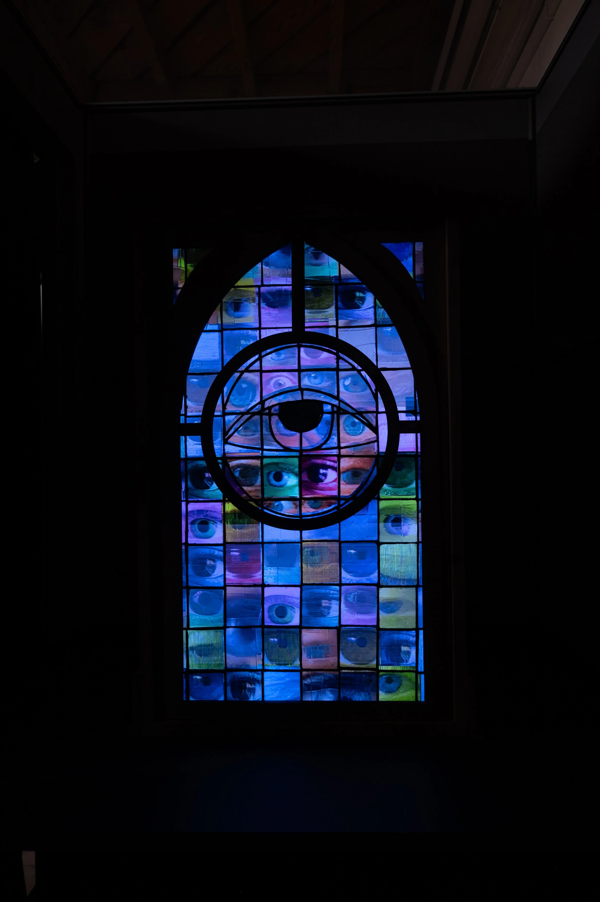
Stained Glass Eyeball
Stained Glass Eyeball is a meditation on technology, religion, and surveillance.
French philosopher Michel Foucault, building on Jeremy Bentham’s design of the Panopticon, a theoretical prison where inmates self-regulate their behavior under the belief they are always being watched, described how power can operate without direct force. Many religions mirror this model through the concept of an all-seeing deity, one who records sins for judgment in the afterlife.
As religion’s daily influence has waned in many parts of the world, our reliance on technology has surged. Through constant metadata collection and the voluntary sharing of our lives on social media, we’ve constructed a new “all-seeing eye” that monitors, remembers, and judges. Foucault even warned that humanity would one day recreate the Panopticon through technology. In this system, the mere possibility of being watched prompts us to internalize that gaze — shaping our behavior even when no one is actually observing.
Stained Glass Pixels makes this experience tangible by fusing symbols of the sacred and the digital. A stained glass window, shaped like a single, unblinking eye, conceals a television screen. As viewers approach, a proximity sensor triggers subtle transformations: more eyes slowly emerge within the window’s panes, while a speaker amplifies a track of indistinct whispers. The pairing of religious iconography with reactive, technology-driven elements invites reflection on the enduring nature of surveillance, whether divine, institutional, or algorithmic.

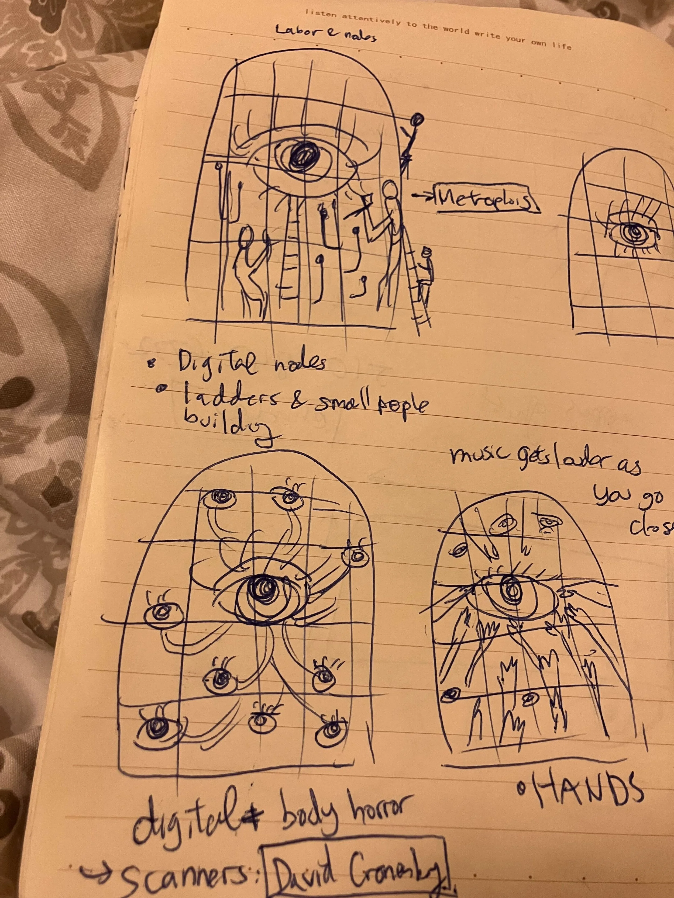
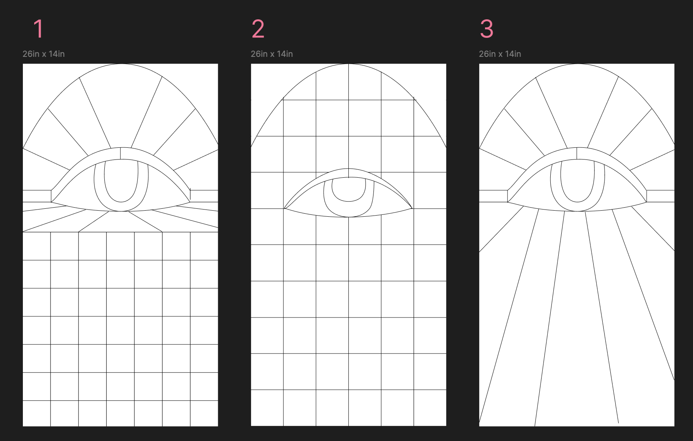
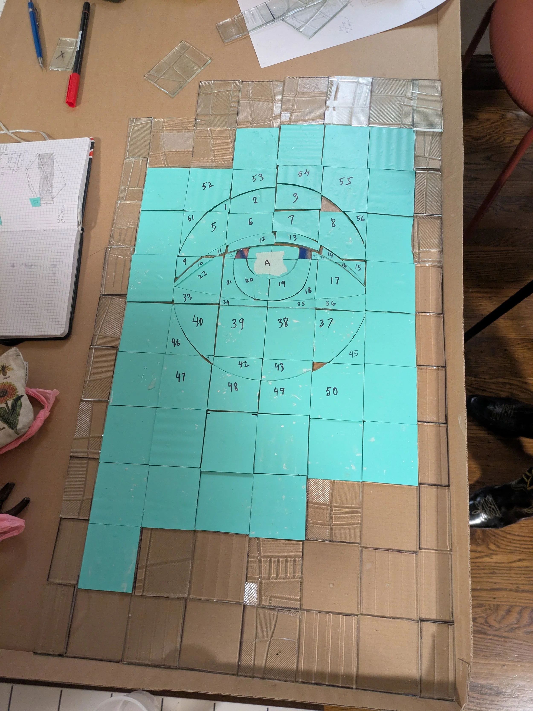
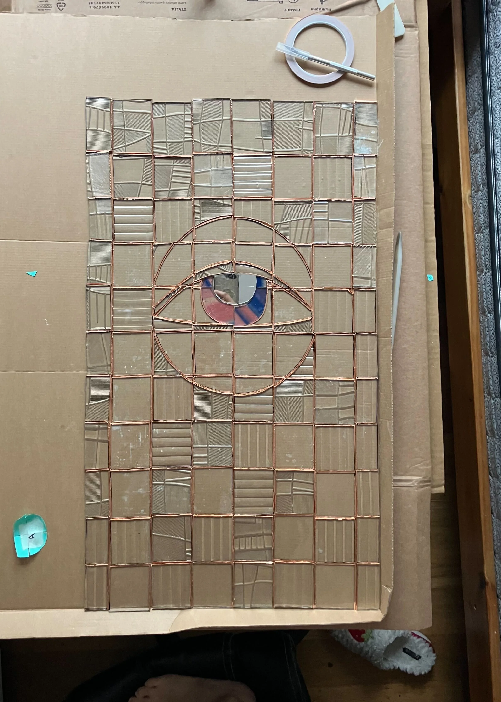
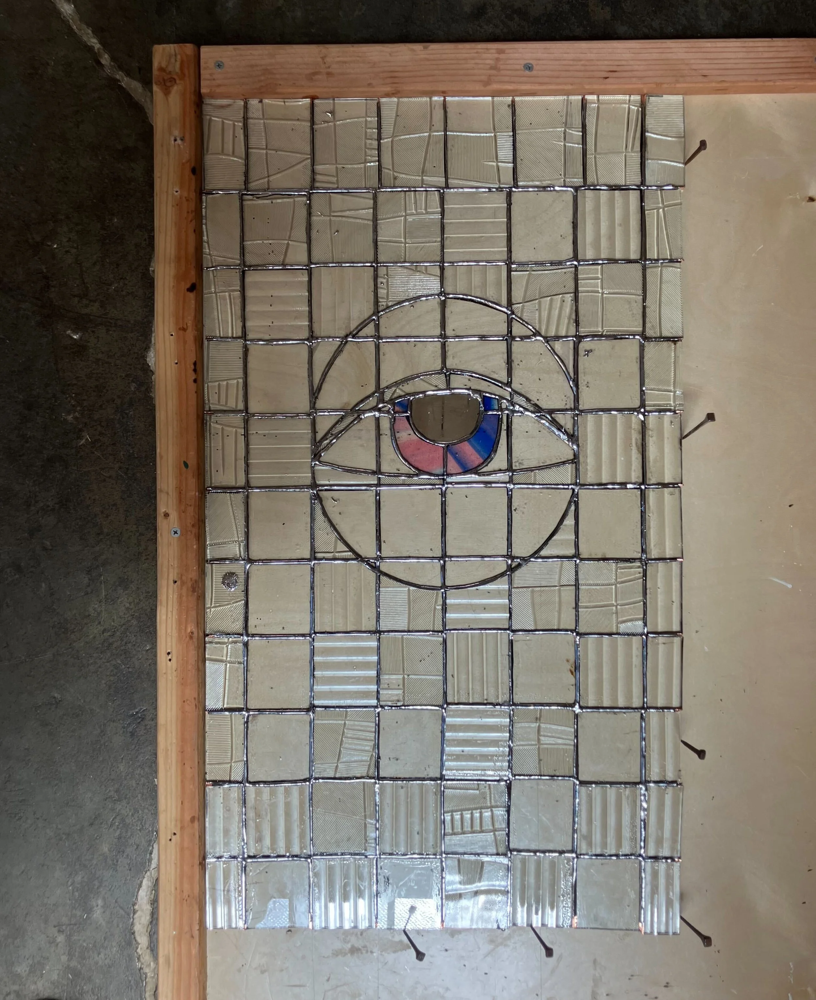
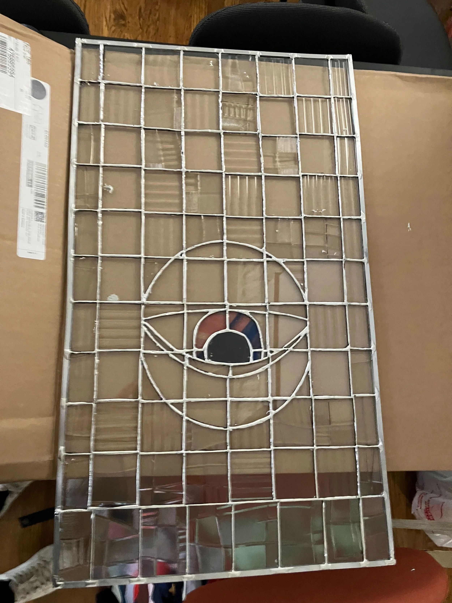
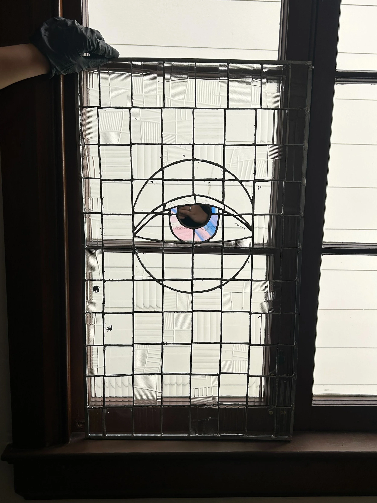
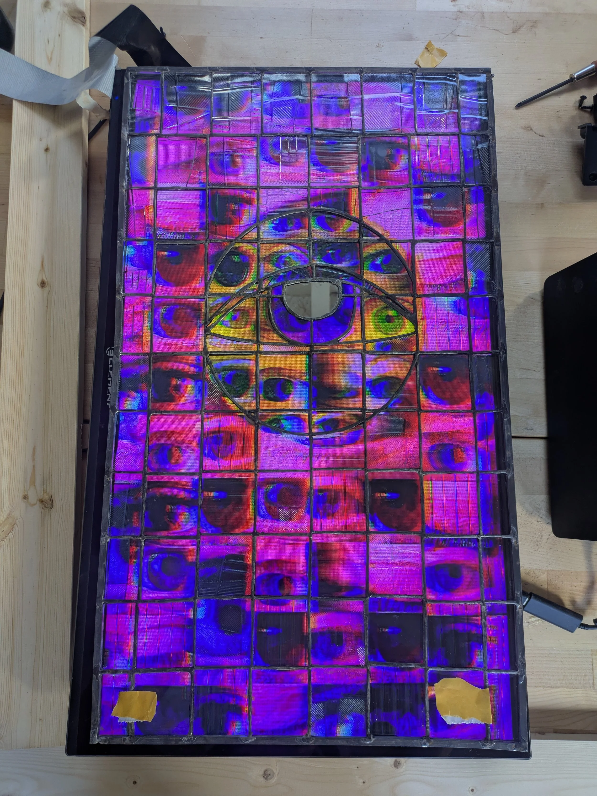
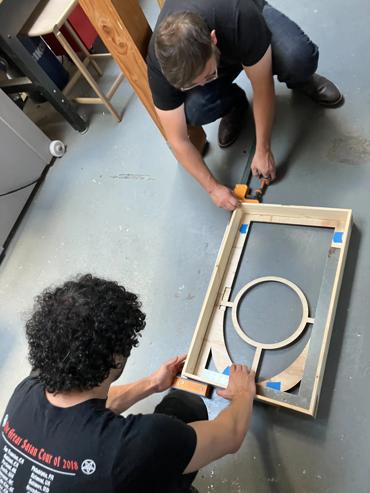
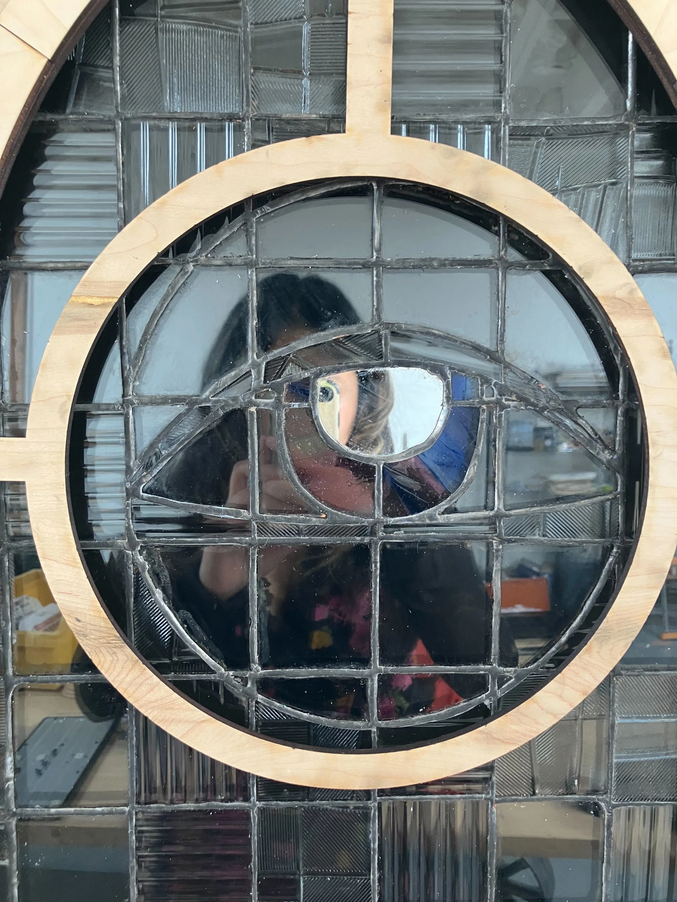
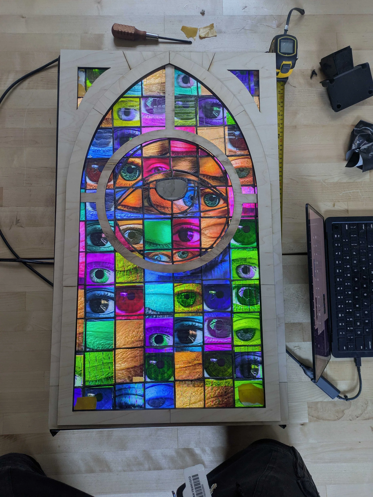